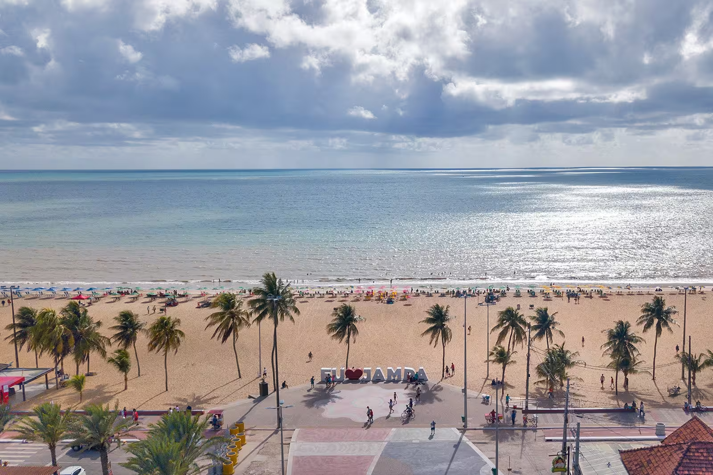

Como chegar em João Pessoa e Circular pela cidade
João Pessoa está situada no ponto mais oriental do Brasil. Em linha reta, está a 1.700 km de Brasília e a 2.200 km de São Paulo.
Turistas que vêm do Sudeste, do Sul, do Centro-Oeste e do Norte vêm de avião. Estando no nordeste, dar pra considerar chegar de
onibus ou carro.
Jampa Turismo Resume:
- > No aeroporto, sai mais barato pegar Uber do que táxi.
- > Há trânsfers compartilhados que incluem passeios na cidade.
- > Vale a pena alugar carro se você preza autonomia e estiver ciente das blitz.
João Pessoa: Praias
Para encontrar as praias no pico da sua beleza, venha entre dezembro e março, quando o mar estará entre o azul-bebê e o verde-água.
Com a entrada das chuvas as águas vão turvando e só voltam a ter aquele azul-da-cor-do-mar às vésperas do verão.
Tambaú
A Praia de Tambaú é considerada uma das melhores de João Pessoa. O lugar costuma ser bem movimentado, já que esta é uma região onde se concentra a maior parte dos hotéis, bares e restaurantes de João Pessoa. A Praia de Tambaú tem uma ótima infraestrutura: no calçadão, há diferentes quiosques para escolher e, na areia, há os clássicos ambulantes e barraquinhas. Os coqueiros e a temperatura agradável deixam a praia convidativa. O mar é tranquilo, com a coloração um pouco mais escura e esverdeada. Uma boa dica é curtir os quiosques que ficam dentro da água. São divertidos, refrescantes e disputados!